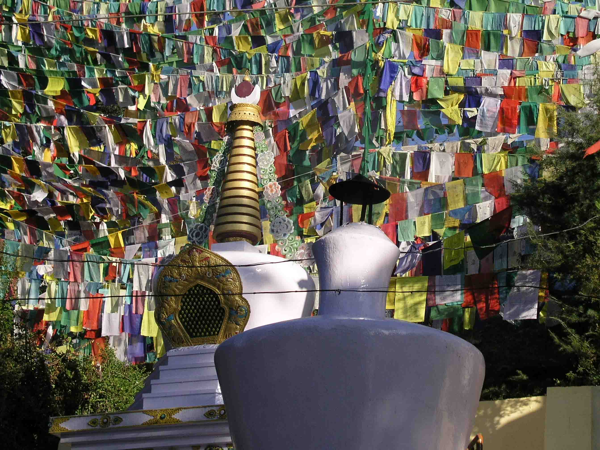
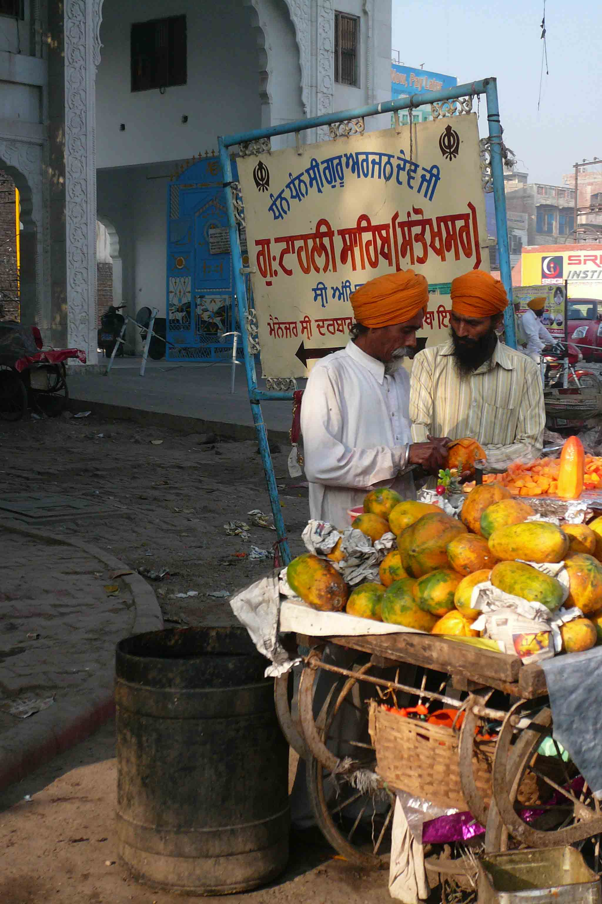
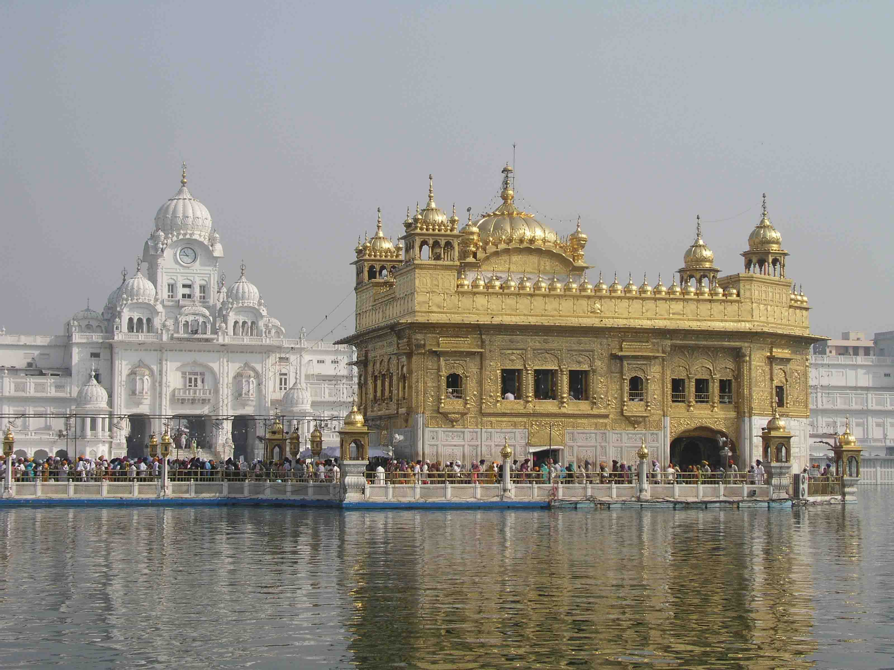
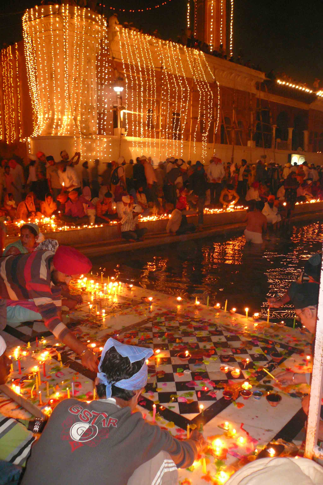
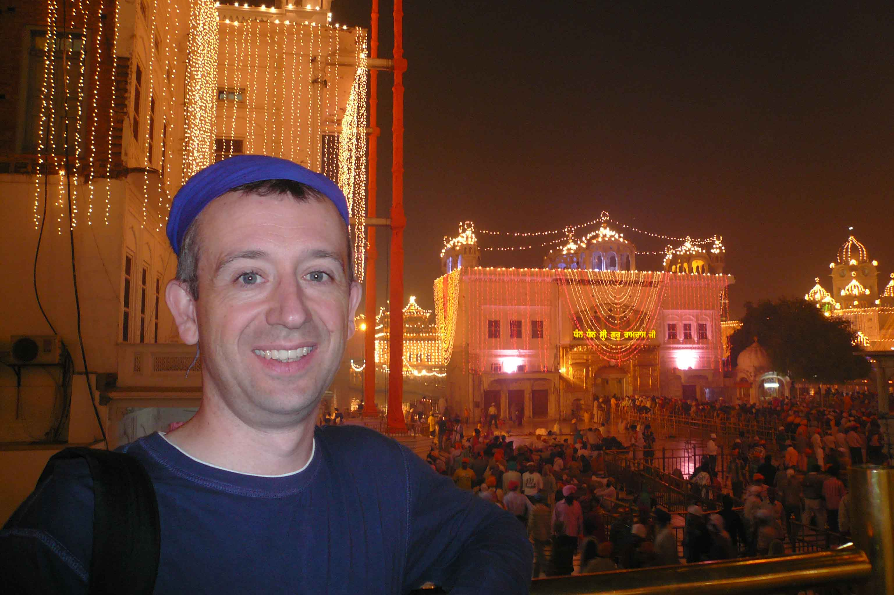
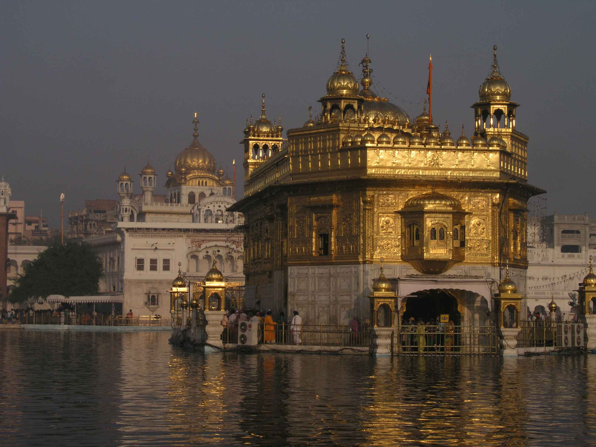
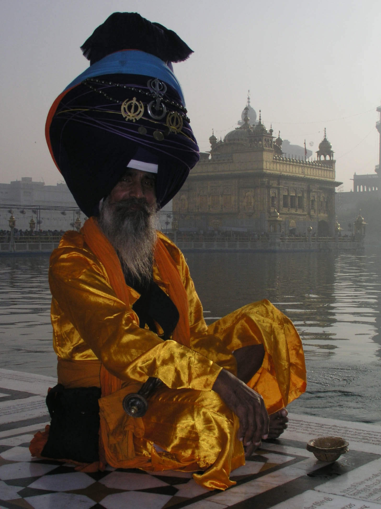

The Festival of Lights
Dalhouse, McLeodganj and Amritsar, India
The week started with a new car puja – a little ceremony involving breaking a coconut, drawing a swastika on our car in red powder called kumkum and saying a few prayers to bless all our journeys to come. We had just bought a Nano – the world’s cheapest car and a wonder of modern engineering. As the advert says ‘Khushiyon ki chaabi’ – ‘Keys to Happiness!’ But, we didn’t get long to enjoy our new car, which is rather like a rickshaw with doors and windows, because we were about to take a well deserved holiday!
It has been a year of huge change for us and very little time for relaxing. The heat of the summer went months ago, the monsoon stopped a few weeks ago and we are now entering the Indian winter, which means holiday time!
Our trip took us north – where we thought we'd covered most of the amazing sights already on our previous travels. We were wrong!
Our first destination was Dalhousie, an old British sanatorium boasting cool clean air and fantastic views of the Pir Panjal ranges. We stayed in The Grand View Hotel (http://www.grandviewdalhousie.in/facilities.html), a wonderful old wooden colonial chalet, complete with ‘Do Not Walk on the Grass’ signs and a lovely patio for sipping tea. This was a place for relaxing, strolling, relaxing, sipping tea and some more relaxing, and was the first time we had actually been cold in the evening since coming to India – in fact, so cold we even had to put our fleeces on.
Next stop was McLeodganj, a place we have been wanting to visit for years mainly because of our interest in Tibet as, of course, this is where the Dalai Lama set up home in 1959 following the Chinese invasion of Tibet. McLeodganj is now the home of the Tibetan Government in Exile and a good few thousand Tibetans. Our hotel, Chonor House (http://www.norbulingka.org/chonor_house/index.html) overlooked the Dalai Lama’s palace and monastery. It was truly the most homely hotel we have ever stayed in and the Tibetan hospitality we received meant that when we moved on there were tears!
McLeodganj was everything we had hoped for and more. We visited a number of projects we had read about and which Sue had raised money for including The Tibetan Children’s Village (TCV). TCV is home to almost 2,000 Tibetan children in exile, many of whom are orphans or whose parents have sent them over the Himalayas risking life and limb for a Tibetan education. We were taken to one of the nurseries where ten 2-4 year olds live with a ‘house mother’. On entering the room, nine of the children attached themselves to Nathan, the last one opting to give a huge cuddle to Sue’s knees! A heart-wrenching place, but also one where Tibetan kids leave with fantastic school results and a full understanding of their culture – a culture that the Chinese government is intent on obliterating.
Other highlights in McLeodganj included watching monks debating by moonlight, receiving a blessing from His Holiness the Karmapa, joining a group of elderly Tibetans chanting ‘Om Mani Padmi Hum’ early one morning doing the kora around His Holiness the Dalai Lama’s temple and bumping into six friends from different corners of the globe!
Our final stop was Amritsar, which we found to be one of the friendliest and most hospitable of Indian cities. We visited the Golden Temple three times – to see it in different lights – but the most amazing visit was on Diwali. We walked around the central ‘Pool of Nectar’ (in a clockwise direction of course!), stopping occasionally to sit and watch the fireworks and the hundreds of tiny diyas (clay lamps) that people were lighting. We were regularly stopped with the request of \"Snap?\" I am not sure how many photos there are now out of there of us, but I do know what it must feel like to be Brad Pitt! The Golden Temple was simply glorious on Diwali, covered in lights and full of people enjoying themselves, eating Prasad (holy food), praying, taking a dip in the holy waters and generally enjoying this once a year festival of lights. To be in India on Diwali was a great experience; to be at the Golden Temple on that most special of nights was truly an experience we will never forget.
It has been a year of huge change for us and very little time for relaxing. The heat of the summer went months ago, the monsoon stopped a few weeks ago and we are now entering the Indian winter, which means holiday time!
Our trip took us north – where we thought we'd covered most of the amazing sights already on our previous travels. We were wrong!
Our first destination was Dalhousie, an old British sanatorium boasting cool clean air and fantastic views of the Pir Panjal ranges. We stayed in The Grand View Hotel (http://www.grandviewdalhousie.in/facilities.html), a wonderful old wooden colonial chalet, complete with ‘Do Not Walk on the Grass’ signs and a lovely patio for sipping tea. This was a place for relaxing, strolling, relaxing, sipping tea and some more relaxing, and was the first time we had actually been cold in the evening since coming to India – in fact, so cold we even had to put our fleeces on.
Next stop was McLeodganj, a place we have been wanting to visit for years mainly because of our interest in Tibet as, of course, this is where the Dalai Lama set up home in 1959 following the Chinese invasion of Tibet. McLeodganj is now the home of the Tibetan Government in Exile and a good few thousand Tibetans. Our hotel, Chonor House (http://www.norbulingka.org/chonor_house/index.html) overlooked the Dalai Lama’s palace and monastery. It was truly the most homely hotel we have ever stayed in and the Tibetan hospitality we received meant that when we moved on there were tears!
McLeodganj was everything we had hoped for and more. We visited a number of projects we had read about and which Sue had raised money for including The Tibetan Children’s Village (TCV). TCV is home to almost 2,000 Tibetan children in exile, many of whom are orphans or whose parents have sent them over the Himalayas risking life and limb for a Tibetan education. We were taken to one of the nurseries where ten 2-4 year olds live with a ‘house mother’. On entering the room, nine of the children attached themselves to Nathan, the last one opting to give a huge cuddle to Sue’s knees! A heart-wrenching place, but also one where Tibetan kids leave with fantastic school results and a full understanding of their culture – a culture that the Chinese government is intent on obliterating.
Other highlights in McLeodganj included watching monks debating by moonlight, receiving a blessing from His Holiness the Karmapa, joining a group of elderly Tibetans chanting ‘Om Mani Padmi Hum’ early one morning doing the kora around His Holiness the Dalai Lama’s temple and bumping into six friends from different corners of the globe!
Our final stop was Amritsar, which we found to be one of the friendliest and most hospitable of Indian cities. We visited the Golden Temple three times – to see it in different lights – but the most amazing visit was on Diwali. We walked around the central ‘Pool of Nectar’ (in a clockwise direction of course!), stopping occasionally to sit and watch the fireworks and the hundreds of tiny diyas (clay lamps) that people were lighting. We were regularly stopped with the request of \"Snap?\" I am not sure how many photos there are now out of there of us, but I do know what it must feel like to be Brad Pitt! The Golden Temple was simply glorious on Diwali, covered in lights and full of people enjoying themselves, eating Prasad (holy food), praying, taking a dip in the holy waters and generally enjoying this once a year festival of lights. To be in India on Diwali was a great experience; to be at the Golden Temple on that most special of nights was truly an experience we will never forget.

Our new car puja

The view from our hotel in Dalhousie of the Pir Panjal Ranges

Victory of God Hill, McLeodganj

Doing the morning kora at Victory of God Hill, McLeodganj

Papaya sellers in the heart of the old city, Amritsar

Just one snap!

The Golden Temple by day

The Pool of Nectar at the Golden Temple

Golden Temple lit for Diwali

Diyas lighting at the Golden Temple

Nathan standing at the Akal Takht

Ones head must be covered

Diwali decoration seller

Diwali balloonwallah

A holy dip

The Golden Temple shortly after sunrise

A khalsi gentleman

Jugaad, Punjab style